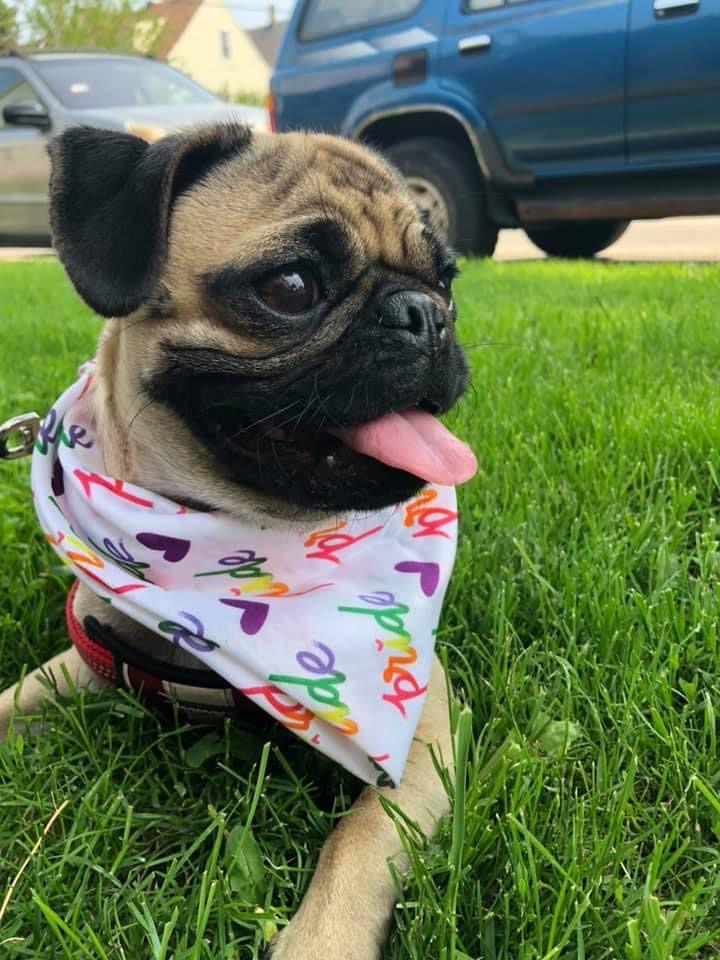
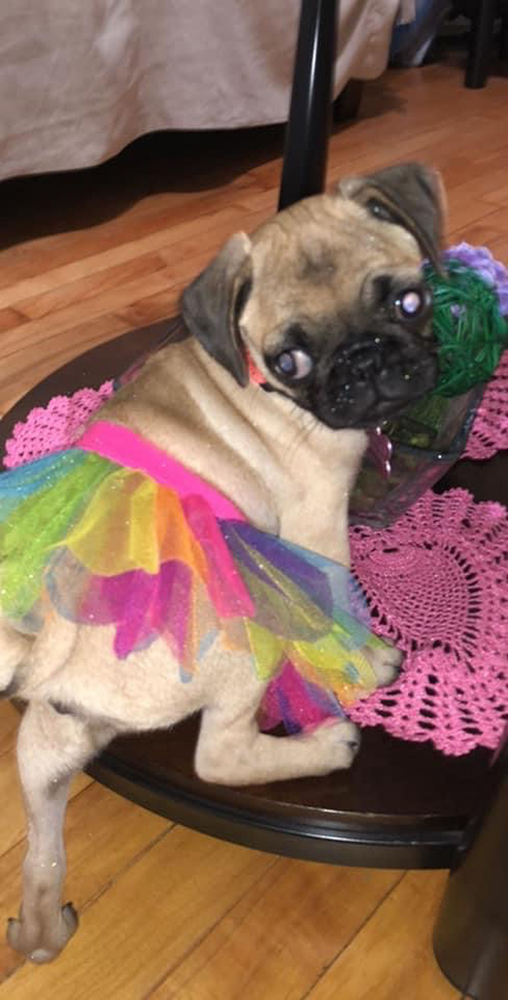

Pugs were originated from an accidental breeding in the 400 B.C. It can be argued that they were breeded in China with the intention to serve the elite society.
Pugs have been characterized as wealthy dogs and since their orgin, they have become companion to people all over the world.
Including myself.
This is my pug, Nala!
Pugs differentiate from other dog breeds through their wrinkled face, small bodies, and curly tails.
Their small faces lead to health issues in normal respiratory. Because Pugs have a small face, they have a small nose; this leads to their nose being a common place for bacteria growth.
The pug breed is also known for their small bodies. This breed has a large appettite and often leads to overweight problems including obesity.
The small face leads to constant snoring and breathing problems.
This noise is very common in pugs when eating, sleeping and even playing.
PUGATUDE is real!!
Even though pugs are small in size, they are big in attitude and sassyness.
Normally, pugs need about 30 minutes of daily excersise, which is a lifetime for them.
Regardless of the sassyness, pugs are the best cuddling buddies anyone can have.
Since a baby, Nala has been a sassy lady